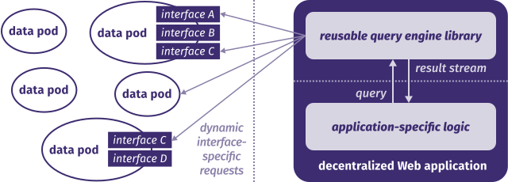

Querying on a decentralized Web
Ruben Verborgh
Ghent University – imec
Querying on a decentralized Web
Querying on a decentralized Web
Querying on a decentralized Web
We can talk about decentralization
on very different scales.

In decentralized a app, every piece of data
can come from a different place.
Web applications become views
that share access to data interfaces.

Separating data from apps allows
providers to compete independently.

Querying on a decentralized Web
Current apps send hard-coded requests
to one specific server interface.

Building Web apps using queries makes
decentralized Web apps more sustainable.

Querying on a decentralized Web